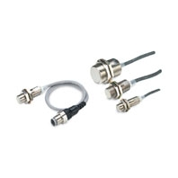
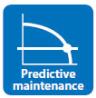
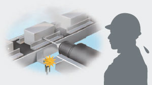
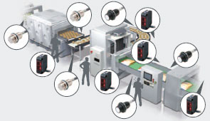
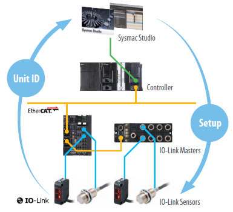
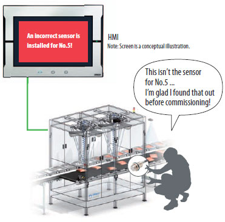

Downtime can be reduced.
Notifies you of faulty parts and such phenomena in the Sensor in real time.
Building Automation
Industrial Automation
Power Automation & Safety


Bangladesh Distributor
E2E-[]-IL[]
IO-Link Proximity Sensor (Standard Models)

IO-Link Makes Sensor Level Information Visible and Solves the Three Major Issues at Manufacturing Sites! Standard Proximity Sensor.
about this Product Family
Related Contents
- Proximity Sensors
- Features
- Lineup
- Specifications
- Dimensions
- Catalog
last update: October 11, 2016
The frequency of sudden failure can be decreased.
Notifies you of objects being too far or too close.
The efficiency of changeover can be improved.
The batch check for individual sensor IDs significantly decreases commissioning time.
Standard Sensor for detecting ferrous metals.
[Omron’s IO-Link Compliant Equipment] Masters and Sensors Can Be Chosen to Match Your Setup Situation
Omron provides two types of Masters, a Master Unit with screw-less clamp terminal blocks and a Master Unit for M12 Smartclick connectors, as IO-Link compliant devices and Sensors for connecting to the screw-less clamp terminals or to the M12 connector terminals that support each Master.
[To those in charge of maintenance “Abnormality detection” for the shortest recovery] Detects Wiring Cable Disconnections and Errors and Improves Equipment Operation Rate Through Quick Maintenance
Past problems
∙ An abnormality was displayed on the abnormality display screen, but upon going to look at the equipment, no external error was detected and the cause of the stop was not understood...
∙ Those responsible for maintenance investigated the cause of the abnormality from the activity of the stopped equipment, but because the maintenance person relied on the skill he or she has to identify the abnormality and replace the failed sensor, stoppages from 2 hours to several days occur...
[With an IO-Link Photoelectric Sensor/Proximity Sensor] Abnormal area and phenomenon of sensors are reported in real time
When an abnormality occurs in a sensor, because you can see where the abnormality occurred and the factors estimated for it, you can go to where the abnormality occurred and recover the equipment in the shortest amount of time.
Also with wire disconnection detection, not only output wires, but also power lines can be detected unconditionally.
[To those in charge of maintenance “Condition monitoring” for predictive maintenance] The Proximity Sensor Indicates an Excessive Proximity to the Sensing Object. Understand the Changes in Device Condition in Advance and Reduce Sudden Stops

Existing problems
The detection position changes due to wear and vibration in the device’s mechanical parts and as a result, false detection and collision with the sensor have a negative impact on the device...

[With an IO-Link Proximity Sensor] You are notified of excessive remoteness or proximity, and the occurrence of sudden defects is greatly reduced
Constantly monitoring the position of the sensing object and notifying of excessive remoteness or proximity can be used for predictive maintenance of the device.
[To those in charge of production engineering “Individual identification” for the reduction of man-hours] Improving System Commissioning and Changeover Efficiency by Checking Identifications in Batches
Existing problems
∙ During system start-up or changeover, operators had to perform the I/O check for each of the thousands of sensors installed on the line, and it took an enormous amount of time...
∙ When a sensor is installed wrong or an error occurs, wasteful work occurred that would normally be unnecessary...

[With an IO-Link Photoelectric Sensor/Proximity Sensor] Without going to the site, you can check individual sensor identifications in batches, resulting in a sharp reduction of commissioning time
By checking the sensor identification (manufacturer/sensor type/model number), you can easily check mistakes such as misconnected or unconnected sensors and installation mistakes.
Also, because it is possible to program multiple sensors at once using the command language used only for the controller, it is also possible to reduce commissioning time sharply.
[Setup] Setting all sensors from a host device at the same time
Program all at once to reduce commissioning time and inconsistent settings

[I/O check] Use identification checks with HMI to prevent installation mistakes
Makes it possible to check for sensor installation mistakes before commissioning

last update: October 11, 2016